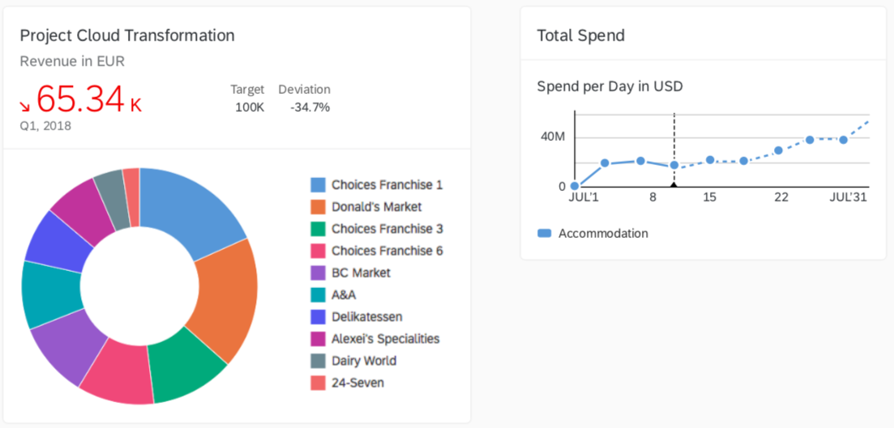
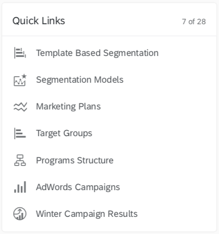

UX Concept
- Cards are representations of an app or page, and offer content to users in a specific context.
- Cards contain a certain set of information from an app or page and can also offer functionality.
- Cards can be a mash-up of multiple apps (such as a list card with links).
- An app or page can be represented by one card, or by multiple cards that each expose different aspects.
- Users get direct insights without leaving the current screen, but cards can still offer further navigation options.
- Cards are composite controls that follow a predefined structure.
Cards consist of:
- A card container - a background and a border which holds the header and the content.
- A header - it can have a title, a subtitle, an icon, and a status. If the header is of type Numeric, it may have different attributes, describing numeric indicator, like KPI for example.
- Content - depends on the card type.
Card types:
 
Characteristics
- Technology agnostic - Different technologies can easily parse the manifest.json file and render a card based on it.
- Self-contained - Everything needed to render the card and make it actionable is described in the manifest.json (including data and functionality).
- Reusable - The manifest.json can be easily parsed, processed and saved in different layers of an application. It is also easily sharable.
Developing Cards
To create a card you should create a manifest.json file which stores all configurations (card structure, data, functionality, etc...). sap.card is the namespace responsible for the card configuration inside the manifest file.